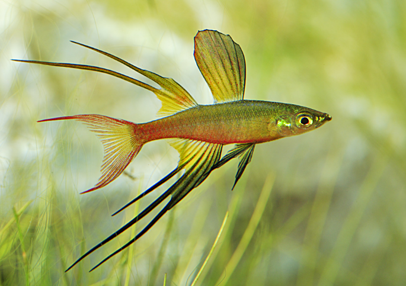
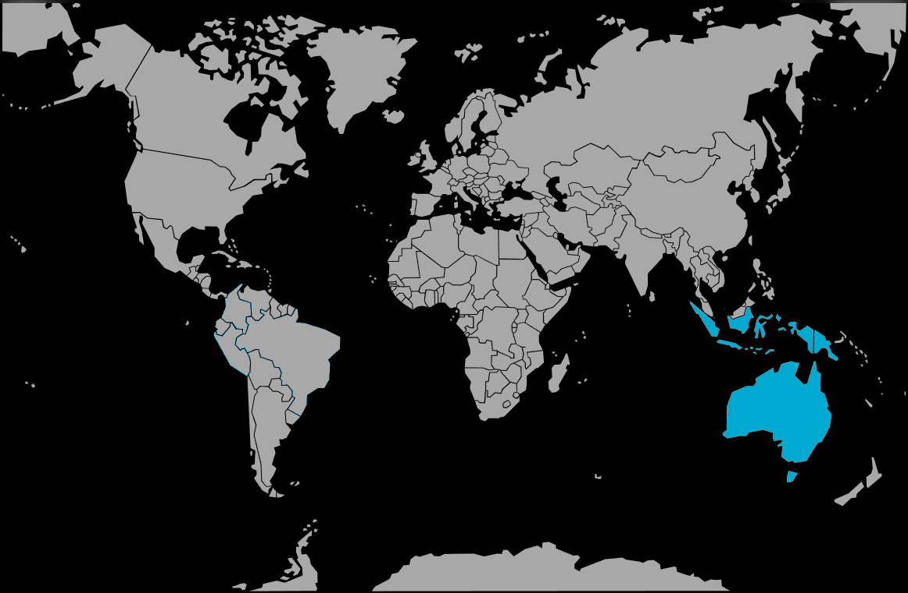

Systématique
- Ordre : Atheriniformes
- Famille : Melanotaeniidae
- Genre : Iriatherina
- Espèce : I. werneri

Iriatherina werneri est l'unique espèce de son genre, caractérisée par une morphologie atypique au sein de la famille des Melanotaeniidae. Originaire d'Océanie, ce petit poisson est remarquable par la structure complexe de ses nageoires.
Le corps est fusiforme, très comprimé latéralement, avec une coloration de base argentée aux reflets métalliques. Les mâles, atteignant 4 à 5 cm, se distinguent par des nageoires dorsale, anale et caudale pourvues de longs filaments noirs ou jaunâtres s'étirant loin du corps. La nageoire caudale présente une forme de lyre prononcée. Les femelles sont plus petites, aux nageoires courtes et transparentes, avec une coloration plus terne.
C'est une espèce délicate, appréciée pour son esthétique, mais qui nécessite un environnement calme et une attention particulière quant à son alimentation du fait de l'étroitesse de sa bouche.
Il s'agit d'une espèce grégaire et paisible, souvent timide. Le maintien en groupe d'au moins 8 à 10 individus est indispensable pour rassurer les poissons et observer leur comportement naturel. Les mâles paradent fréquemment en déployant leurs nageoires de manière saccadée pour interagir avec les femelles ou les autres mâles, sans agressivité physique réelle.
En raison de ses nageoires fragiles et de son tempérament calme, I. werneri ne supporte pas la cohabitation avec des poissons vifs ou agressifs. Il doit être maintenu en spécifique ou avec de très petites espèces calmes occupant d'autres zones de l'aquarium.
Mode : ovipare diffuseur.
La reproduction a lieu parmi la végétation fine (type mousses aquatiques). La femelle expulse quelques œufs par jour sur une période continue. Les œufs sont adhésifs et ne reçoivent aucun soin parental.
L'élevage des alevins est considéré comme difficile. L'éclosion survient après 7 à 10 jours. Les larves, extrêmement petites, nagent sous la surface et nécessitent une nourriture microscopique vivante (infusoires, paramécies, rotifères) pendant au moins deux semaines avant de pouvoir ingérer des nauplies d'artémias.
Dimorphisme sexuel : très marqué. Le mâle possède des nageoires impaires très développées et filamenteuses ainsi que des couleurs plus soutenues. La femelle a des nageoires courtes et un corps plus pâle.
Espérance de vie : environ 3 à 4 ans en captivité dans des conditions optimales.
L'espèce fréquente les eaux douces claires à courant lent ou nul : marais, lagunes, bras morts de rivières (billabongs) et ruisseaux de forêt pluviale. Ces biotopes sont caractérisés par une végétation aquatique dense (nénuphars, plantes immergées) offrant ombrage et protection.
Répartition

Origine naturelle :
- Centre-sud de la Nouvelle-Guinée (Indonésie et Papouasie-Nouvelle-Guinée).
- Nord de l'Australie (Péninsule du Cap York, Terre d'Arnhem).
- Bassins fluviaux du Fly et du Jardine.
Les populations sont souvent localisées dans des zones humides côtières spécifiques, isolées les unes des autres.
Paramètres de maintenance
Température : 24 à 28 °C (supporte jusqu'à 30 °C).
pH : 5,5 à 7,5 (préférence pour une légère acidité).
GH : 5 à 12 °dGH, eau douce à moyennement dure.
Courant : faible à très lent. Un fort brassage est à proscrire car il épuise le poisson.
Volume conseillé : minimum 60 à 80 L pour un groupe, bac bien planté avec espace de nage libre.
Régime alimentaire
Régime : omnivore à tendance micro-prédatrice (planctonivore).
Dans la nature, il consomme du phytoplancton et de petits crustacés. Sa bouche et sa gorge sont très étroites.
En aquarium, il nécessite des nourritures fines : poudres pour alevins, micro-granulés, et surtout du vivant ou congelé de petite taille (daphnies tamisées, cyclops, nauplies d'artémias).